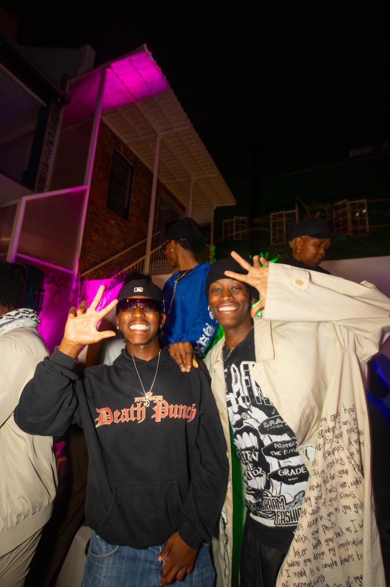
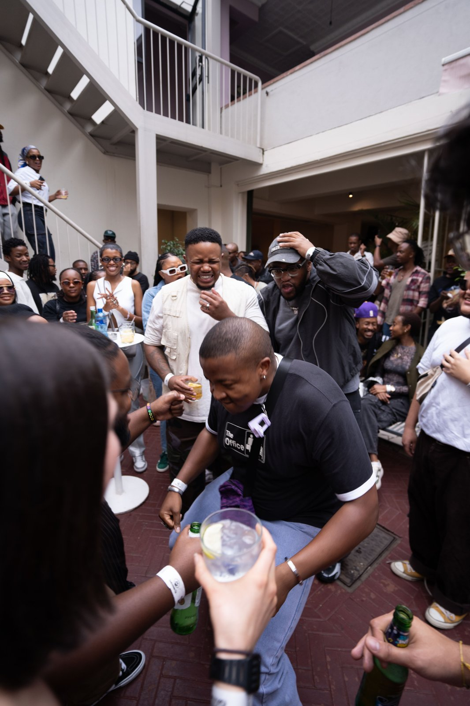
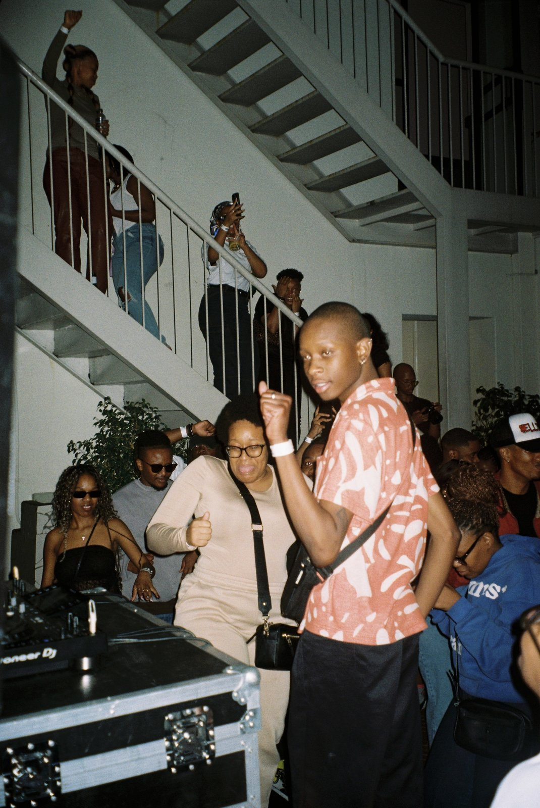
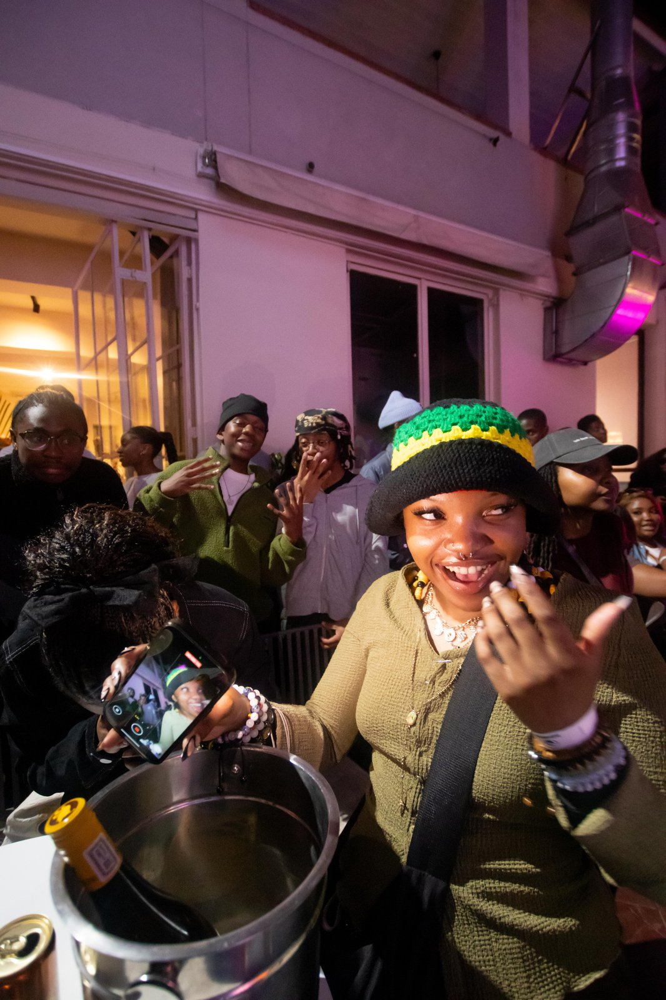
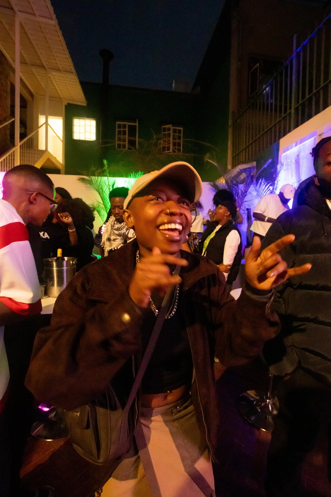

Between Us (BÜ)
FlagshipThe proven event series. BÜ has established itself as Joburg's most intimate curated gathering — where music, community, and culture collide in spaces that feel less like events and more like memories.
View Upcoming Dates →The Story
Mission
Never Not Nice is Johannesburg's premier creative house — a platform dedicated to curating, preserving, and amplifying the underground subculture movements that define a generation.
From fashion drops to intimate music events, from editorial concepts to community activations — NNN operates as both a curator and an architect of cultural moments that matter.
The Parent Brand
The umbrella. The identity. The house that everything is built within.
The proven event series. BÜ has established itself as Joburg's most intimate curated gathering — where music, community, and culture collide in spaces that feel less like events and more like memories.
View Upcoming Dates →Ultra-exclusive. Underground. A one-night collision of music, fashion, and limited-access culture that exists to be remembered, not described.
See Countdown →Archive
We preserve what mainstream culture overlooks.
Access
We create entry points into scenes that feel closed.
Aesthetic
Every detail, from invite to recap, is intentional.
Always
Never Not Nice. The standard doesn't drop.
The Archive, In Motion

Between Us

Archive

Joburg

The Community

The Recap